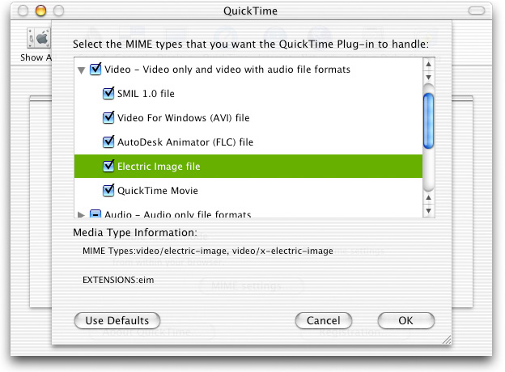

Q: I'm writing a Movie Import component and would like to know what the 'mcfg' resource is used for.A: QuickTime Media Configuration 'mcfg' resources (kQTMediaConfigResourceType) list characteristics of file types supported by QuickTime Importer Components. This resource is used by the QuickTime MIME configuration control panel to build and configure its user interface (Figure 1). It is also used by the QuickTime Plug-In to build a list of MIME types the QuickTime Plug-in registers itself for, and to figure out how to open and import files. Figure 1: QuickTime MIME Configuration Control Panel.  While some, but not all of the information contained within the 'mcfg' resources is available elswhere in an Importer Component, not everything is available, and not all in one place. A good example is information such as Group ID, Plug-In, Application Flags and so on. Every Movie Importer Component ('eat ') and Graphics Importer Component ('grip') should have one. An example 'mcfg' resource for a Movie Importer is shown in Listing 1. Listing 1: 'mcfg' resource for the Electric Image Movie Importer.
resource 'mcfg' (512)
{
kVersionDoesntMatter, // Version of the component this applies to
{
// The ID of the group this type belongs with, (OSType, one of
// kQTMediaConfigStreamGroupID, etc.)
// This flag determines which group this MIME type will be listed
// under in the MIME Configuration Control Panel
kQTMediaConfigVideoGroupID.
// MIME config flags (unsigned long, one or more of
// kQTMediaConfigCanUseApp, etc.)
kQTMediaConfigUseAppByDefault // By default, associate with application
// specified below instead of the QuickTime
// plug-in
| kQTMediaConfigCanUseApp // This type can be associated with an
// application
| kQTMediaConfigCanUsePlugin // This type can be associated with the
// QuickTime plug-in
| kQTMediaConfigBinaryFile, // The file is binary, not just text
'EIDI', // MacOS file type when saved (OSType)
'TVOD', // MacOS file creator when saved (OSType)
// Component information, used by the QuickTime plug-in to find the
// component to open this type of file
'eat ', // Component type (OSType)
'EIDI', // Component subtype (OSType)
'vide', // Component manufacturer (OSType)
kEI_MovieImportFlags, // Component flags
0, // Flags mask
'EIM ', // Default file extension (OSType) - this must be in
// uppercase. It will match an ".eim" suffix
// case-insensitively
kQTMediaInfoNetGroup, // QT file type group (OSType, one of
// kQTMediaInfoNetGroup, etc.)
// Media type synonyms, an array of zero
// or more Pascal strings - none here
{
},
{
"Electric Image file", // Media type description for MIME
// configuration panel and browser
"eim", // File extension(s), comma delimited
// if more than one
"QuickTime Player", // Opening application name for MIME
// configuration panel and browser
"Electric Image Movie Importer", // Missing software description for the
// missing software dialog
"Version 1.3", // Vendor info string (copyright, version, etc)
},
// Array of one or more MIME types that describe this
// media type (eg. audio/mpeg, audio/x-mpeg, etc.)
{
"video/electric-image",
"video/x-electric-image",
},
}
};
If either or both of the kQTMediaConfigCanUseApp and kQTMediaConfigCanUsePlugin flags are set, the MIME type will automatically show up in the MIME Configuration Control Panel allowing a user to choose how they want QuickTime to handle the file, if at all. If the kQTMediaConfigUsePluginByDefault flag is set, QuickTime will automatically register the MIME type for the QuickTime Plug-in with all browsers on both platforms. When adding a 'mcfg' resource to your Importer Component, remember to add it to your components public resource list (Listing 2). Listing 2: 'thnr' resource for the Electric Image Movie Importer.
// Component public resource
resource 'thnr' (512) {
{
'mime', 1, 0,
'mime', 512, 0,
'mcfg', 1, 0,
'mcfg', 512, 0
}
};
References:Back to Top  Document Revision History| Date | Notes |
|---|
| 2005-10-17 | editorial | | 2003-05-12 | Discusses the Media Configuration 'mcfg' resource which lists Importer Component file type characteristics and its use. |
Posted: 2005-10-17
|